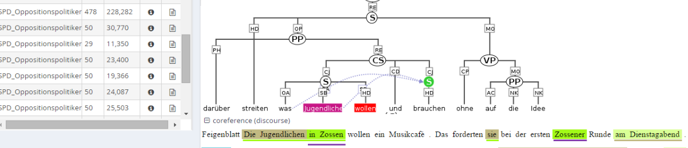
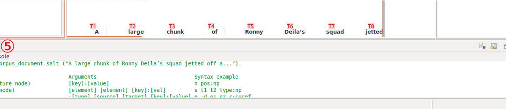
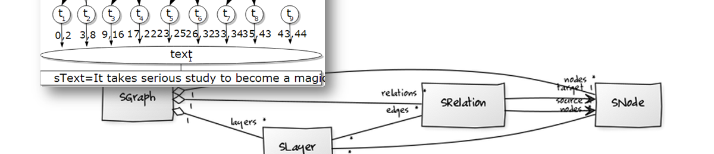
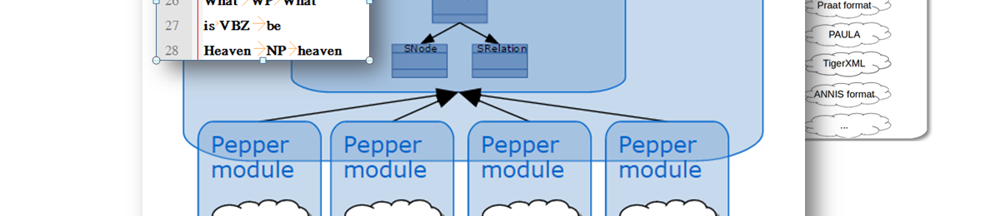

{% assign path = page.url | split:"/"  %}

<!-- Main jumbotron for a primary marketing message or call to action -->
      <div class="jumbotron">
	<h1>
		{% if page.url == site.site_home %} {{site.title}} {% elsif {{path[1]}} == 'salt' %} <span class="icon-salt"></span> Salt {% elsif {{path[1]}} == 'pepper' %} <span class="icon-pepper-o"></span> Pepper {% elsif {{path[1]}} == 'annis' %}<span class="icon-annis"></span> ANNIS {% elsif {{path[1]}}  ==  'atomic' %}<i class="icon-atomic"></i> Atomic{%else%}{{site.title}}{% endif %}
        </h1>
        <p>
{% if page.url == site.site_home %}
A collection of tools to process your linguistic data: <em>annotation</em>, <em>conversion</em>, <em>analysis</em>

<div id="carousel-example-generic" class="carousel slide" data-ride="carousel" data-interval="3000">
  <!-- Controls -->
  <a class="left carousel-control" href="#carousel-example-generic" role="button" data-slide="prev">
    <span class="glyphicon glyphicon-chevron-left"></span>
  </a>
  <a class="right carousel-control" href="#carousel-example-generic" role="button" data-slide="next">
    <span class="glyphicon glyphicon-chevron-right"></span>
  </a>

  <!-- Indicators -->
  <ol class="carousel-indicators">
    <li data-target="#carousel-example-generic" data-slide-to="0" class="active"></li>
    <li data-target="#carousel-example-generic" data-slide-to="1"></li>
    <li data-target="#carousel-example-generic" data-slide-to="2"></li>
    <li data-target="#carousel-example-generic" data-slide-to="3"></li>
  </ol>
 
  <!-- Wrapper for slides -->
  <div class="carousel-inner">
    <div class="item active">
      
      <div class="carousel-caption">
          <h2 class="carousel-heading">ANNIS</h2>
      </div>
    </div>
    <div class="item">
      
      <div class="carousel-caption">
          <h2 class="carousel-heading">Atomic</h2>
      </div>
    </div>
    <div class="item">
      
      <div class="carousel-caption">
          <h2 class="carousel-heading">Salt</h2>
      </div>
    </div>
    <div class="item">
      
      <div class="carousel-caption">
          <h2 class="carousel-heading">Pepper</h2>
      </div>
    </div>
  </div>
 
</div> <!-- Carousel -->

{% elsif {{path[1]}} == 'salt' %}
A powerful, tagset-independent and theory-neutral meta model and API for storing, manipulating, and representing nearly all types of linguistic data
{% elsif {{path[1]}} == 'pepper' %}
A highly extensible plattform for conversion and manipulation of linguistic data between an unbound set of formats. Pepper can be used stand-alone as a command line interface, or be integrated as an API into other software products.
{% elsif {{path[1]}} == 'annis' %}
A web browser-based search and visualization architecture for complex multilayer linguistic corpora with diverse types of annotation. 
{% elsif {{path[1]}} == 'atomic' %}
A cross-platform multi-layer corpus annotation tool – and extensible platform – for the desktop.
{% endif %}

</p>
      </div>
